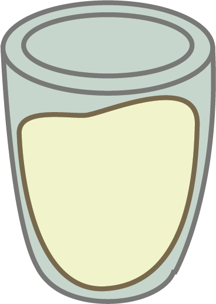

蚵仔麵線 OYSTER VERMEICELLI
Vermicelli is actually a common Taiwanese noodle that directly translates to string noodle, as the noodles are as thing as strings. This dish is made out of three elements, the oysters, the vermicelli and the thick soup. The thick soup, usually made out of broth, is thickened with corn starch and is not usually drank but eaten with the noodles. The oyster in the dish is usually fried then added into the soup, which in turn creates this thick outer layer outside of the oyster. Sometimes, at some shops, they will offer another kind of this dish, where they add intestines into the soup. The intestines are usually very fatty, which adds a fattiness to the mostly light flavoured soup.